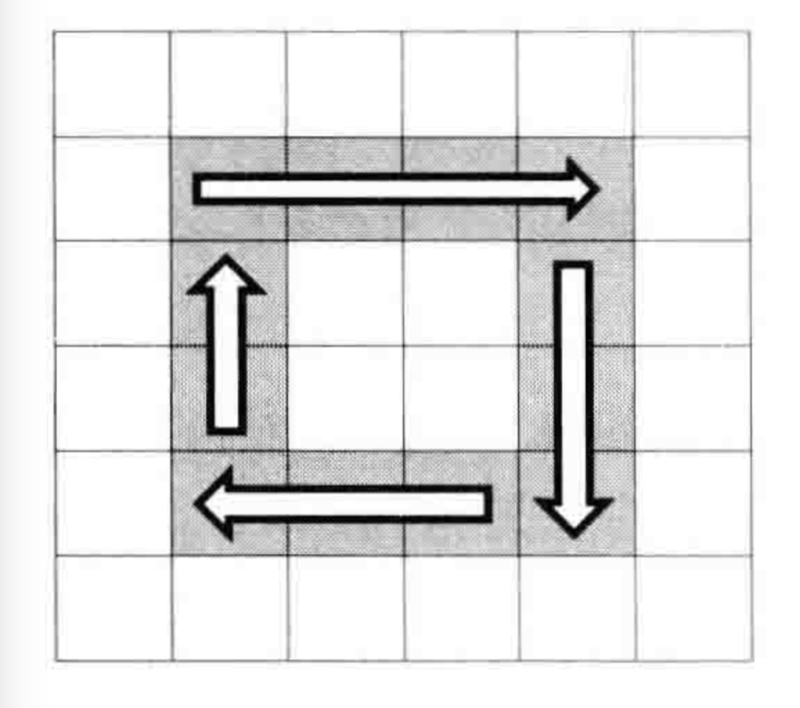
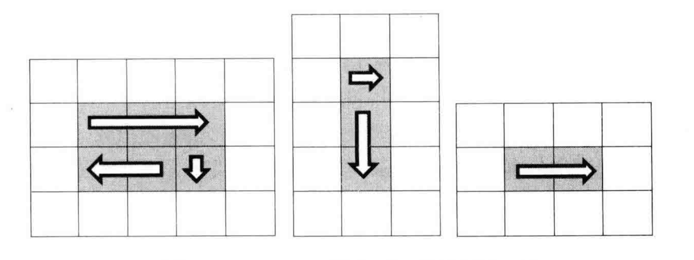

借助图形思考，将复杂的矩阵拆解成若干个圈，循环打印矩阵，每次打印其中一个圈
设起点坐标为(start,start)，矩阵的行数为rows，矩阵的列数为columns
循环结束条件为 rows>start*2 并且 columns>start*2
将打印一圈拆解为四步
第一步：从左到右打印一行
第二步：从上到下打印一列
第三步：从右到左打印一行
第四步：从下到上打印一列
最后一圈很有可能出现几种异常情况,打印矩阵最里面一圈可能只需三步、两步、甚至一步

所以在每一行打印时要做好条件判断:
能走到最后一圈，从左到右必定会打印
结束行号大于开始行号，需要从上到下打印
结束列号大于开始列号，需要从右到左打印
结束行号大于开始行号+1，需要从下到上打印